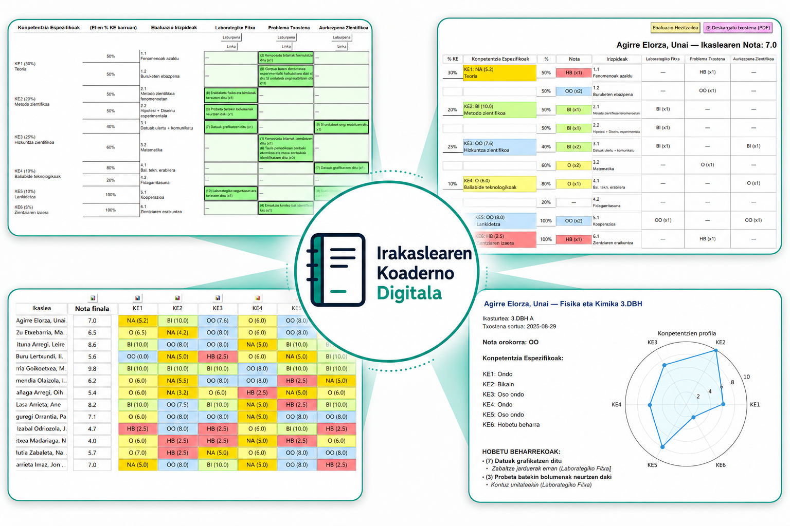

Irakaslearen Koaderno Digitala
Irakaslearen eguneroko lana antolatzeko, jarraipena egiteko eta informazioa modu digitalean kudeatzeko tresna praktikoa.

Zer da programa hau?
Irakaslearen Koaderno Digitala irakasleentzako sortutako programa bat da. Ikasleen ebaluazioa eta jarraipena modu hezitzaile, konpetentzial eta kohorente batean aurrera eramateko.
Programa erabili nahi duzu?
Programa hau erabili eta testeatu nahi baduzu, kontaktuan jar zaitez hurrengo helbide elektronikoan:
✉️ fisikasi2016@gmail.comPrograma ezagutzeko bideoak
Beheko bideoak behin-behinekoak dira. Gero zuk URL egokiak jar ditzakezu.